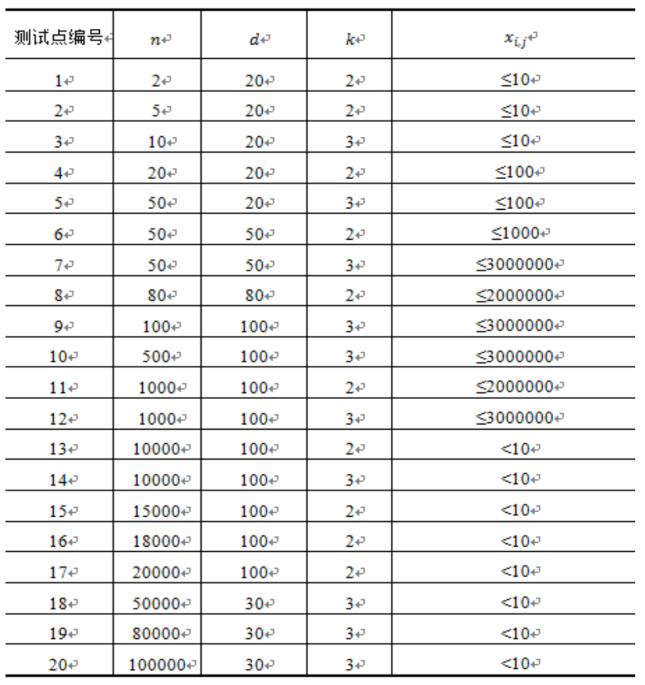

两个 $d$ 维向量 $A=[a_1,a_2,\cdots,a_d]$ 与 $B=[b_1,b_2,\cdots,b_d]$ 的内积为其相对应维度的权值的乘积和，即：
$(A,B)=\sum^d_{i=1}a_ib_i=a_1b_1+a_2b_2+\cdots+a_db_d$
现有 $n$ 个 $d$ 维向量 $x_1,\cdots,x_n$，小喵喵想知道是否存在两个向量的内积为 $k$ 的倍数。请帮助她解决这个问题。
第一行包含3个正整数$n,d,k$，分别表示向量的个数，维数以及待检测的倍数。
接下来$n$行每行有$d$个非负整数，其中第$i$行的第$j$个整数表示向量$x_i$的第$j$维权值$x_{i,j}$。
包含两个整数，用空格隔开。
如果存在两个向量 $x_p,x_q$ 的内积为 $k$ 的整数倍，则输出两个向量的编号 $p$ 与 $q$（要求 $p<q$）。如果存在多组这样的向量组合，输出其中任意一组即可。若不存在这样的向量组合，则输出两个 $-1$。
3 5 2 1 0 1 0 1 1 1 0 1 0 0 1 0 1 1
2 3
【样例说明】
$(x_1,x_2)$=1$(x_1,x_3)$=1$(x_2,x_3)$=1
【数据规模和约定】

 Comet OJ
Comet OJ